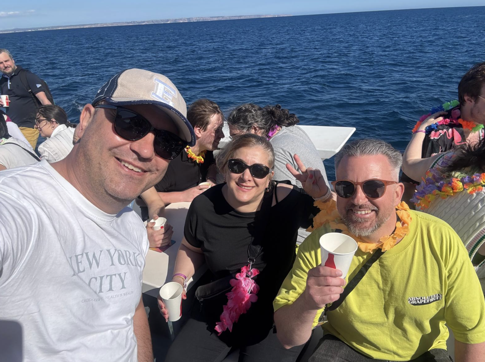
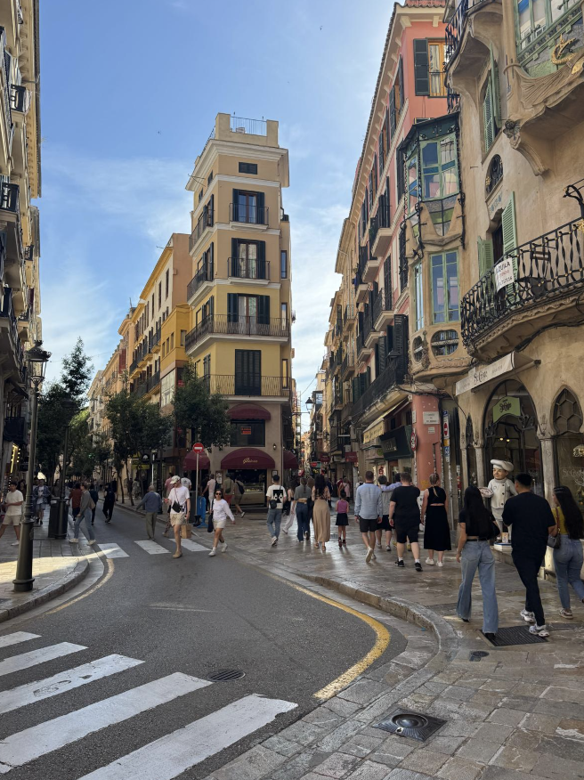
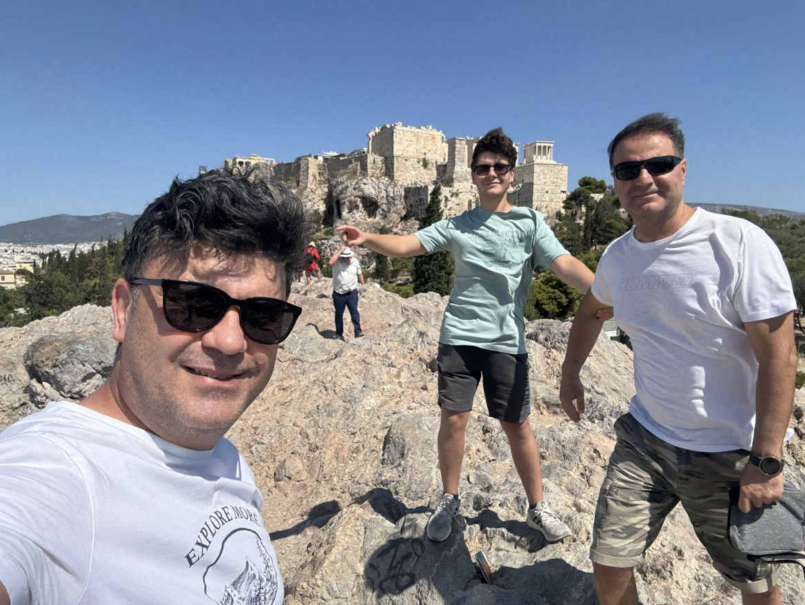
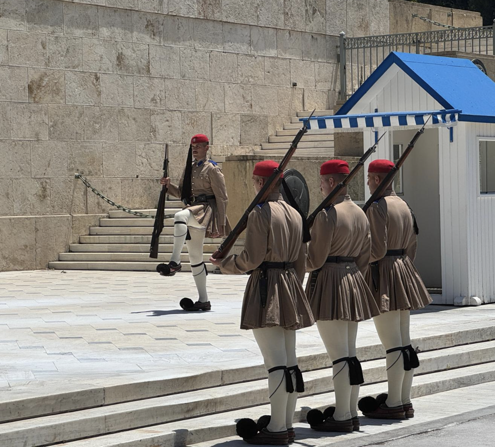
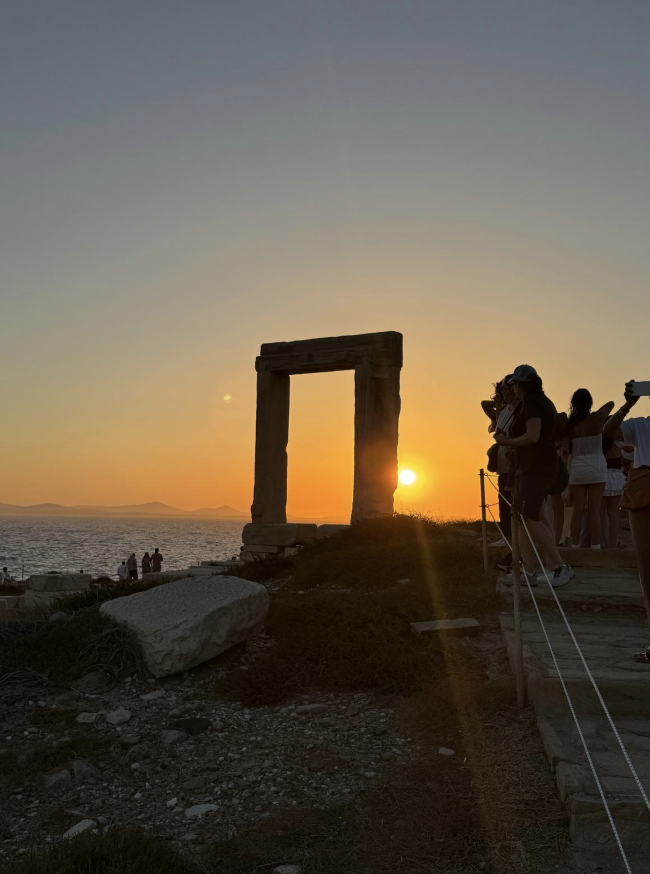
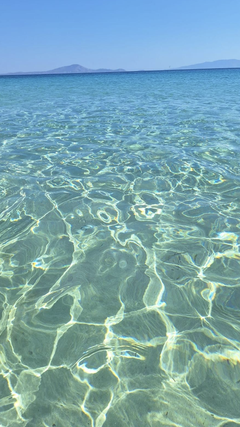

Mallorca, Spain
I visited Mallorca as part of a company trip. The trip included team-building activities, meetings and time together with colleagues, but there was also plenty of time to relax and have fun.


Athens, Greece
Athens was mainly a cultural trip. I enjoyed visiting historical places, walking around the city and learning more about its history and culture.


Naxos, Greece
After Athens, I visited Naxos. This part of the trip was more about the sea, beaches and enjoying the summer.

